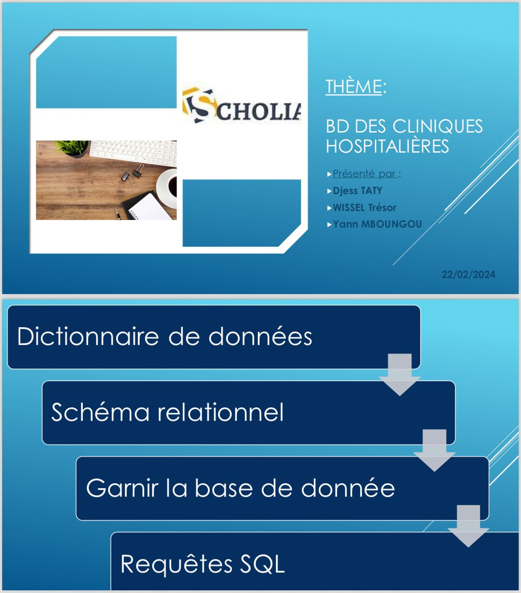
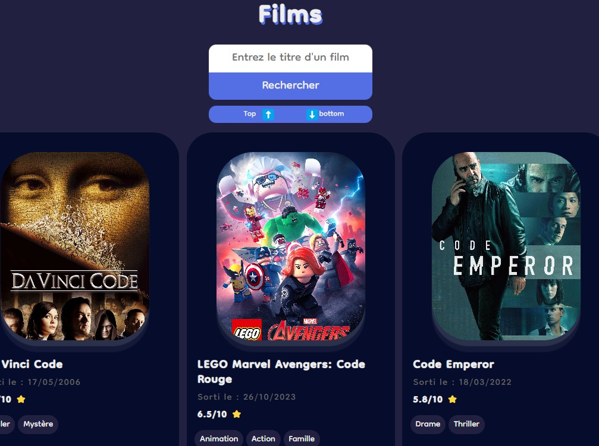
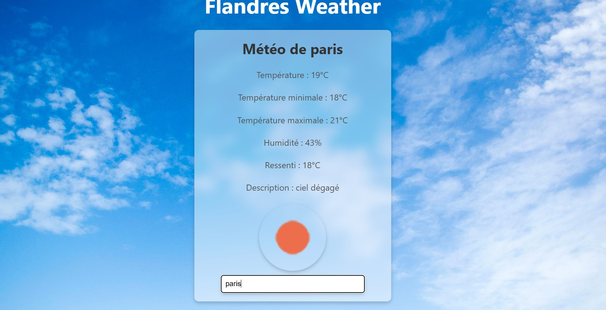
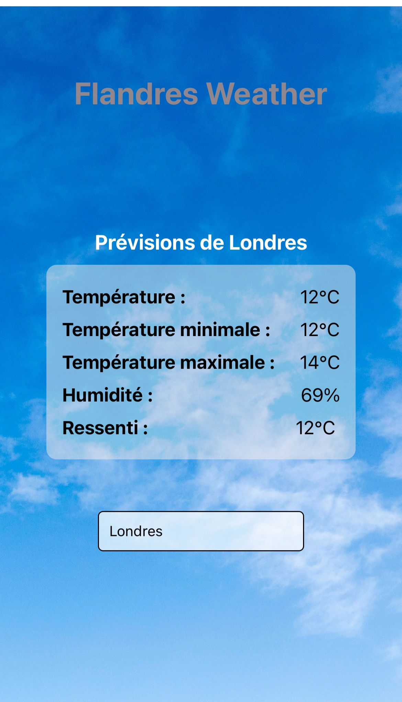
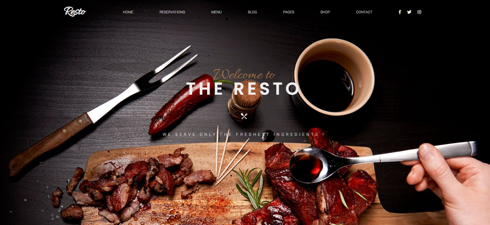

à propos de moi
👋 Bonjour et bienvenue sur mon portfolio ! Je m'appelle
TATY si de flandres, et je suis étudiant en
BTS Services Informatiques aux Organisations (SIO),
option Solutions Logicielles et Applications Métiers
(SLAM) . Passionné par le développement logiciel et les
technologies de l'information, je m'efforce de créer des applications
innovantes et efficaces. Sur ce site, vous découvrirez mes projets
académiques et personnels, mes compétences techniques, ainsi que mon
parcours de formation. N'hésitez pas à explorer et à me contacter pour
toute question ou opportunité de collaboration. Merci de votre visite et
bonne navigation !
BTS SIO
Le BTS Services Informatiques aux Organisations (SIO) est un diplôme
de niveau Bac+2 qui forme des techniciens spécialisés dans les métiers
de l'informatique. Il se divise en deux options :
SLAM
Option SLAM Solutions Logicielles et Applications Métiers, qui se
concentre sur le développement d'applications et de logiciels. .
Les étudiants apprennent à analyser les besoins des utilisateurs,
concevoir des applications, et développer des programmes en
utilisant divers langages de programmation.
Les compétences acquises incluent la
programmation orientée objet, le développement web, la gestion
de projets informatiques, et la résolution de problèmes
techniques .
Débouchés
-
Développeur
d'applications
-
Analyste-programmeur
-
Chef de projet junior
-
Administrateur de bases
de données
-
Consultant en solutions
logicielles
SISR
L'Option SISR (Solutions d'Infrastructure, Systèmes et Réseaux) se
concentre sur la gestion et la maintenance des infrastructures
informatiques et des réseaux. Les étudiants apprennent à
installer, configurer et administrer des systèmes et des réseaux,
tout en assurant leur sécurité et leur performance.
Les compétences acquises incluent la
virtualisation, la gestion des serveurs, la sécurité des
réseaux, et le dépannage des infrastructures
informatiques.
Débouchés
-
Administrateur réseau
-
Technicien systèmes et
réseaux
-
Responsable sécurité
informatique
-
Consultant en
infrastructure
-
Ingénieur systèmes et
réseaux junior
Le BTS SIO prépare les étudiants à travailler dans divers secteurs,
tels que le développement web, la gestion de bases de données,
l'administration système et réseau, et le support technique. Les
diplômés peuvent poursuivre leurs études en licence professionnelle ou
intégrer directement le marché du travail.
Projets professionnel
Actuellement étudiant en BTS Services Informatiques aux Organisations
(SIO), option Solutions Logicielles et Applications Métier (SLAM), je
suis passionné par le développement d'applications mobiles et de sites
web. Mon objectif professionnel est de poursuivre mes études en
intégrant une école d'ingénieur spécialisée dans ces
domaines. Je souhaite approfondir mes compétences techniques et
acquérir une expertise avancée pour concevoir des solutions innovantes
et performantes. Cette formation me permettra de réaliser mon ambition
de devenir un ingénieur en développement d'applications mobiles et
web, capable de répondre aux défis technologiques de demain.
Mes projets
Vous trouverez ci-dessous une sélection de mes projets réalisés dans le
cadre de ma formation en BTS SIO, option SLAM. Ces projets illustrent
mes compétences en développement web et mobile, ainsi que ma capacité à
travailler sur des applications variées. N'hésitez pas à explorer chaque
projet pour en savoir plus sur les technologies utilisées et les défis
relevés.
BDD cliniques

Projet en groupe de gestion de base de données pour une clinique.
Mysql
Voir plus
Gaming campus

Site web de présentation d'un campus de jeux vidéo.
Html Css
voir plus
La montagne

Site de présentation des montagnes, inspiré de la nature.
Html Sass
voir plus
CineFinder

Application de recherche de films, par genre ou par titre.
React Sass Tmdb
voir plus
Flandres weather (web)

Application web de météo
React Weather Css
voir plus
Flandres weather (mobile)

Application mobile de météo
React native Weather Css
voir plus
restaurant

Site web responsive de restaurant
Html Sass
voir plus
Mes compétences
Toutes ces connaissances ont été acquises de différentes façons. Elles
ont été acquises durant mes études en BTS SIO et d'autres par ma
propre initiative en essayant de mettre en place des solutions. J’ai
également relevé les défis organisés, ce qui permet d’effectuer des
recherches et aller encore plus loin.
Mes outils et logiciels
Toutes ces connaissances ont été acquises de différentes façons. Elles
ont été acquises durant mes études en BTS SIO et d'autres par ma propre
initiative en essayant de mettre en place des solutions. J’ai également
relevé les défis organisés, ce qui permet d’effectuer des recherches et
aller encore plus loin.
Veilles technologiques
En tant qu'étudiant en BTS SIO, je m'intéresse particulièrement aux
avancées dans le domaine de l'intelligence artificielle (IA). Voici
quelques tendances et applications qui m'ont particulièrement marqué :
1. Présentation Générale
Kling 2.0 est une intelligence artificielle de
génération de vidéos à partir de texte, développée par
Kuaishou, l’un des plus grands concurrents de TikTok
en Chine. Lancée officiellement en mai 2024, cette IA repose sur un
système avancé de modélisation visuelle et physique. Elle permet de
créer des vidéos d'une durée pouvant aller jusqu'à deux minutes à
partir de simples instructions textuelles, comme :
Exemple :
Un chien court dans un champ sous un ciel nuageux avec une caméra
en mouvement latéral
— Kling génère une vidéo HD réaliste en quelques secondes.
2. Fonctionnalités Clés
-
Génération vidéo à partir de texte : Kling
interprète des descriptions et génère des scènes cohérentes en
mouvement.
-
Rendu 1080p et animations fluides : les vidéos
produites sont nettes, avec une gestion réaliste de la lumière, des
ombres, et des textures.
-
Caméra dynamique : contrairement à de nombreux
générateurs, Kling permet des mouvements de caméra (zoom,
travelling, rotation, etc.).
-
Modélisation de la physique : les objets réagissent
à la gravité, au vent ou à l'inertie, ce qui améliore le réalisme
(chute d’objets, ondulations de l’eau, etc.).
-
Compréhension du contexte : si le texte mentionne
une ambiance romantique ou un ton dramatique, Kling adapte les
couleurs, la météo, ou les expressions des personnages.
3. Innovations Technologiques
Kling 2.0 se distingue par une série d’innovations majeures :
-
Modèle de diffusion spatio-temporel : il s’agit
d’une architecture qui anticipe les mouvements à travers le temps et
l’espace, ce qui permet une continuité visuelle impressionnante.
-
Modélisation 3D implicite : au lieu de générer
image par image, Kling conçoit une structure tridimensionnelle
virtuelle que la vidéo explore avec une caméra dynamique.
-
Apprentissage multi-modal : Kling a été entraînée
non seulement sur des vidéos, mais aussi sur du son, du texte et des
mouvements simulés, ce qui la rend polyvalente.
Exemple : si vous demandez « Une scène de science-fiction
dans une ville futuriste la nuit », Kling gérera lumière artificielle,
reflets, circulation, etc., en cohérence.
4. Cas d’Utilisation
Grâce à sa souplesse, Kling 2.0 peut être utilisé dans de nombreux
domaines :
-
Marketing digital : création rapide de publicités
personnalisées pour les réseaux sociaux sans tournage réel.
-
Éducation : vidéos illustratives sur des sujets
scientifiques ou historiques (par exemple : la tectonique des
plaques animée à partir d’une simple description).
-
Industrie du cinéma : création de storyboards
dynamiques ou de prévisualisations sans passer par des outils 3D
complexes.
-
Jeux vidéo : prototypage de cinématiques ou scènes
environnementales avant développement.
-
Journalisme immersif : reconstitution d’événements
historiques ou de prédictions visuelles.
5. Enjeux et Limites
Malgré ses avancées, Kling soulève des questions majeures :
-
Véracité de l’information : risque de deepfakes
très réalistes pouvant servir à désinformer ou manipuler l’opinion
publique.
-
Droits d’auteur : incertitudes sur les données
d’entraînement. Les créateurs peuvent-ils revendiquer un style copié
?
-
Respect de la vie privée : risque d'usurpation
d'identité visuelle si Kling est utilisée à mauvais escient.
-
Impact sur les métiers créatifs : automatisation
partielle des métiers de l’animation, du montage ou des effets
visuels.
6. Comparaison avec Sora (OpenAI)
OpenAI a également lancé Sora, un outil similaire.
Voici une comparaison synthétique :
-
Sora : fort accent sur la cohérence narrative,
capable de générer des scènes stylisées, mais avec moins de réalisme
physique que Kling.
-
Kling : excelle dans la fluidité des mouvements, la
modélisation physique et la gestion du réalisme tridimensionnel.
-
Marché : Sora vise un public international
(notamment États-Unis), tandis que Kling est majoritairement déployé
en Chine… pour l’instant.
7. Perspectives d’Avenir
Avec Kling 2.0, la création de contenu visuel entre dans une ère où
les barrières techniques tombent. Dans un futur proche, on pourrait
imaginer :
-
Des plateformes sociales permettant à tout utilisateur de publier
des vidéos générées en quelques secondes.
-
Des formations 100 % visuelles pour les étudiants ou les salariés à
l’aide d’IA génératives.
-
Des assistants IA capables de générer un film court en réponse à une
demande vocale ou écrite.
Les enjeux réglementaires (propriété intellectuelle, traçabilité de
l’IA) seront donc centraux pour encadrer son usage.